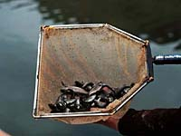
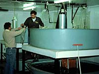

History of the Fort Qu'Appelle Fish Culture Station In the year 1900, the first actual stocking of a water body took place in Saskatchewan. The area stocked was in the Qu'Appelle Valley, specifically, Qu'Appelle, Crooked and Round Lake. The 8 million whitefish fry were transported over 300 miles by rail and horse-drawn wagon from a hatchery in Selkirk, Manitoba!  The rapid settlement if the west in the early twentieth century meant a major increase in demand on prairie fish stocks. In 1910, the federal government appointed a royal commission to investigate problems which had arisen with fisheries in Saskatchewan and Alberta. The commission's report was released in 1912. The commission saw fit to recommend that two hatcheries be established in Saskatchewan; one at Fort Qu'Appelle and another at Prince Albert. In 1913, construction began on the Fort Qu'Appelle Fish Culture Station.
The station began operating in 1915 under the supervision of the federal government, providing over 10 million whitefish, and 400 pike primarily to lakes in the Qu'Appelle chain. During the station's early years, the vast majority of its stock was comprised of whitefish. Cisco were introduced in 1918, perch in 1920, bass in 1923, and walleye, brown trout, and rainbow trout in 1924. In 1930, the station became a provincial responsibility with the signing of the Resources Transfer Agreement by the federal and provincial governments. A major renovation and expansion was undertaken in the late 1950's, providing the station with modern equipment and the capability to rear more exotic species. Additional species raised over the years include
 A further renovation program was initiated in 1983. The program included new wells, water filtration system, indoor and outdoor brood ponds, water storage reservoir, standby power unit, and a Visitor Information Centre.
|